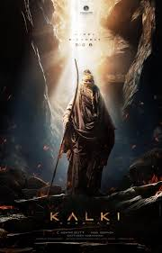
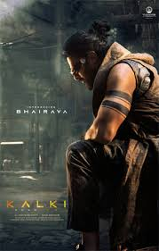

"Kalki 2898 AD" stands as a landmark project in Indian cinema, blending elements of epic science fiction with action-packed sequences and rich cultural influences drawn from Hindu mythology. Spearheaded by director Nag Ashwin and backed by the production prowess of C. Aswani Dutt of Vyjayanthi Movies, the film promises a cinematic experience unlike any other. Set in the distant future of 2898 AD, the narrative unfolds in a post-apocalyptic world, offering viewers a glimpse into a mesmerizing yet perilous future.
The journey to bring "Kalki 2898 AD" to the silver screen has been a labor of love and dedication, with the film facing its fair share of challenges along the way. From the initial announcement in February 2020 to the eventual commencement of filming in July 2021, the project encountered delays attributed to the unprecedented disruptions caused by the COVID-19 pandemic. Despite these setbacks, the production team remained steadfast in their commitment to delivering a cinematic spectacle that would captivate audiences worldwide..
One of the defining aspects of "Kalki 2898 AD" is its ambitious scale and production value, with a staggering budget of ₹600 crore making it the most expensive Indian film ever made. This investment underscores the filmmakers' commitment to pushing the boundaries of storytelling and visual effects, ensuring that every frame of the film exudes grandeur and spectacle. From elaborate sets to cutting-edge CGI, every aspect of the production has been meticulously crafted to transport viewers to a future world teeming with imagination and wonder.
As the release date for "Kalki 2898 AD" draws near, anticipation among fans and cinephiles continues to reach fever pitch. Originally slated for a May 2024 release, the film's launch was postponed due to the ongoing 2024 Indian general election, with a new release date set for June 27, 2024. Despite the delays, the fervor surrounding the film remains unabated, with audiences eagerly awaiting the opportunity to embark on an unforgettable cinematic journey unlike any other. In the realm of marketing, "Kalki 2898 AD" has left an indelible mark, with strategic promotions and teasers generating buzz and excitement among fans. From the unveiling of character posters to the film's prestigious presentation at San Diego Comic-Con's "Hall-H," the marketing campaign has succeeded in capturing the imagination of audiences worldwide, setting the stage for a blockbuster theatrical release.
In conclusion, "Kalki 2898 AD" represents a bold leap forward for Indian cinema, blending cutting-edge technology with timeless storytelling to create a cinematic experience that transcends boundaries. With its stellar cast, groundbreaking visuals, and epic narrative scope, the film promises to be a milestone event that will leave an indelible mark on the annals of cinematic history. As audiences prepare to immerse themselves in the captivating world of "Kalki 2898 AD," one thing is certain the future of Indian cinema has never looked brighter.